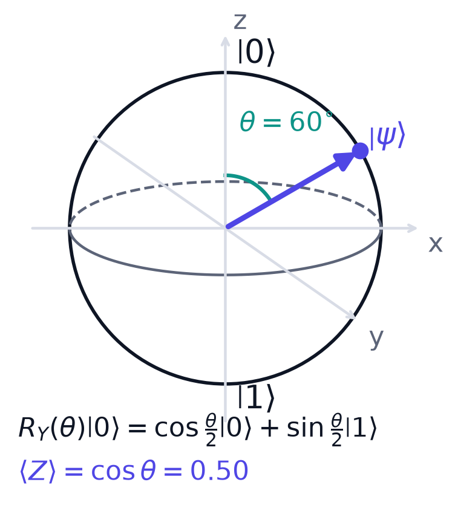

Chapter 2: The Hilbert-Space Picture¶
If you want to know what a quantum model can and cannot represent, you must know the shape of the space its states live in. That space is a Hilbert space, and this chapter collects, with proofs where proofs are short, everything about it that learning needs: states as vectors, inner products and the Born rule, the Bloch sphere for one qubit, tensor products and entanglement for many, density matrices for imperfect knowledge, observables and expectation values for reading numbers out, and unitaries as the model class. Two ideas recur throughout the book and are planted here: the squared overlap of two states is a similarity measure (it will become the kernel), and an expectation value must be estimated from finitely many shots (it will limit everything).
2.1 State space: what a Hilbert space is¶
A Hilbert space \(\mathcal{H}\) is a complex vector space equipped with an inner product \(\langle\cdot,\cdot\rangle\) that is complete in the norm it induces, \(\lVert v\rVert=\sqrt{\langle v,v\rangle}\). In finite dimension completeness is automatic, so \(\mathcal{H}\cong\mathbb{C}^d\) with the standard inner product, and nothing exotic is needed. By the physics convention the inner product is conjugate-linear in its first argument and linear in the second.
A pure state is a unit vector in \(\mathcal{H}\), identified up to a global phase: \(\lvert\psi\rangle\) and \(e^{i\gamma}\lvert\psi\rangle\) are physically identical, because no measurement can tell them apart. One qubit lives in \(\mathbb{C}^2\) with computational basis \(\{\lvert 0\rangle,\lvert 1\rangle\}\), and a general qubit state is
The two complex numbers \(\alpha,\beta\) are amplitudes. The normalisation constraint is what makes them probability amplitudes rather than arbitrary weights: it says the squared lengths add up to one, the way probabilities must. Only the relative phase of \(\alpha\) and \(\beta\) is physical.
Key idea
Everything a quantum model can represent is a vector in \(\mathcal{H}\); everything it can do is a linear map on \(\mathcal{H}\).
2.2 Dirac notation, bases and the Born rule¶
Dirac notation is bookkeeping for linear algebra. A ket \(\lvert\psi\rangle\in\mathcal{H}\) is a column vector. The matching bra \(\langle\psi\rvert\) is the linear functional \(\lvert\phi\rangle\mapsto\langle\psi\vert\phi\rangle\), represented by the conjugate-transpose row vector. The inner product \(\langle\psi\vert\phi\rangle\) pairs the entries, conjugating the first, and adds them. A state overlapped with itself gives one, \(\langle\psi\vert\psi\rangle=1\).
An orthonormal basis \(\{\lvert j\rangle\}\) satisfies \(\langle j\vert k\rangle=\delta_{jk}\), and gives the resolution of the identity
The outer product \(\lvert\phi\rangle\langle\psi\rvert\) is an operator, and \(\lvert j\rangle\langle j\rvert\) projects onto basis state \(j\). Inserting the resolution of the identity is the workhorse trick used again and again in later derivations.
The Born rule
Measuring \(\lvert\psi\rangle\) in an orthonormal basis \(\{\lvert\phi_k\rangle\}\) yields outcome \(k\) with probability
Normalisation guarantees that these probabilities sum to one: \(\sum_k\lvert\langle\phi_k\vert\psi\rangle\rvert^2=\langle\psi\vert\big(\sum_k\lvert\phi_k\rangle\langle\phi_k\rvert\big)\vert\psi\rangle=\langle\psi\vert\psi\rangle=1\).
Hold on to the squared overlap \(\lvert\langle\phi\vert\psi\rangle\rvert^2\). It is a similarity score between two states: \(1\) when they are the same state, \(0\) when they are orthogonal. It is exactly the quantity a quantum kernel estimates, which is why the inner product is the pivot between quantum mechanics and machine learning.
One measurement gives one outcome, not the amplitudes. To learn the probabilities you must run the circuit many times; each run is a shot. Measurement also changes the state (it collapses to the observed basis state), so every shot must start from a fresh preparation.
Example 2.1: Born probabilities
The state is \(\lvert\psi\rangle=\tfrac{\sqrt3}{2}\lvert 0\rangle+\tfrac12\lvert 1\rangle\). Find the probabilities of reading \(0\) and \(1\), and the expected counts in 1000 shots.
Step 1. Check normalisation: \(\left(\tfrac{\sqrt3}{2}\right)^2+\left(\tfrac12\right)^2=\tfrac34+\tfrac14=1\).
Step 2. Apply the Born rule: \(P(0)=\left(\tfrac{\sqrt3}{2}\right)^2=\tfrac34=0.75\) and \(P(1)=\left(\tfrac12\right)^2=\tfrac14=0.25\). Check: \(0.75+0.25=1\).
Step 3. With 1000 shots expect about 750 zeros and 250 ones. Not exactly, because each shot is random; the fluctuation is quantified in Section 2.6.
2.3 The Bloch sphere¶
Strip away the global phase and a single qubit state needs only two real numbers, a polar angle \(\theta\in[0,\pi]\) and an azimuthal angle \(\varphi\in[0,2\pi)\):
The space of pure single-qubit states is therefore the surface of a unit sphere in \(\mathbb{R}^3\), the Bloch sphere, with \(\lvert 0\rangle\) at the north pole and \(\lvert 1\rangle\) at the south pole. The half angles appear because the map from \(SU(2)\) to rotations of the sphere is two-to-one: turning the sphere once round corresponds to only half a turn at the level of the state vector.
A parameterised rotation moves the state around this sphere. The rotation by angle \(\theta\) about the \(y\) axis is
Applied to the north pole it gives \(R_Y(\theta)\lvert 0\rangle=\cos\frac{\theta}{2}\lvert 0\rangle+\sin\frac{\theta}{2}\lvert 1\rangle\): the state slides along a meridian, and the polar angle is exactly \(\theta\).

Readout. The Pauli-\(Z\) observable has eigenvalue \(+1\) on \(\lvert 0\rangle\) and \(-1\) on \(\lvert 1\rangle\), so for \(\lvert\psi\rangle=R_Y(\theta)\lvert 0\rangle\)
In Figure 2.1, \(\theta=60^\circ\) and \(\langle Z\rangle=\cos 60^\circ=0.50\). The output of a parameterised circuit is a smooth trigonometric function of its dial setting, and this is the origin of the parameter-shift rule of Chapter 10. Mixed states, introduced in Section 2.5, occupy the interior of the ball.
Turn the sphere and apply gates to see where the state goes. Every gate listed in Chapter 3 is a rotation: \(X\), \(Y\) and \(Z\) are half-turns, \(H\) is a half-turn about the axis between \(x\) and \(z\), and \(S\) and \(T\) are quarter and eighth turns about \(z\). The readout \(\langle Z\rangle\) is the height of the arrow.
2.4 Many qubits: tensor products and dimension¶
The state space of \(n\) qubits is the tensor product \(\mathcal{H}=(\mathbb{C}^2)^{\otimes n}\), of dimension \(2^n\), with basis \(\lvert b_1b_2\cdots b_n\rangle\), \(b_j\in\{0,1\}\). A general state is a weighted sum over all \(2^n\) bit strings,
Two kinds of state arise. A product state \(\lvert\Psi\rangle=\lvert\psi_1\rangle\otimes\cdots\otimes\lvert\psi_n\rangle\) needs only \(O(n)\) numbers to describe. Anything else is entangled. The standard example is
which admits no such factorisation (Example 2.2). Product states are classically simulable. Entanglement is the resource that prevents efficient factorised simulation: it is necessary, though not sufficient, for the \(2^n\)-dimensional description to be unavoidable.
Example 2.2: the state \((\lvert 00\rangle+\lvert 11\rangle)/\sqrt2\) is entangled
Suppose it were a product: \((a_0\lvert 0\rangle+a_1\lvert 1\rangle)\otimes(b_0\lvert 0\rangle+b_1\lvert 1\rangle)=a_0b_0\lvert 00\rangle+a_0b_1\lvert 01\rangle+a_1b_0\lvert 10\rangle+a_1b_1\lvert 11\rangle\).
Matching coefficients: \(a_0b_0=a_1b_1=1/\sqrt2\), and \(a_0b_1=a_1b_0=0\). From \(a_0b_1=0\) either \(a_0=0\) or \(b_1=0\). If \(a_0=0\) then \(a_0b_0=0\neq1/\sqrt2\). If \(b_1=0\) then \(a_1b_1=0\neq1/\sqrt2\). Both are contradictions, so no factorisation exists.
Dimension is not advantage
QML hopes to exploit the exponential dimension as an implicit feature space. The catch is that only \(O(\mathrm{poly}(n))\) numbers can be read out per circuit. The size of the state space and the amount of accessible information are different things. Do not accept the argument that exponential dimension automatically means exponential learning power.
2.5 Density matrices and mixed states¶
Every state so far has been a single vector. But often you are genuinely ignorant: the machine prepares \(\lvert\psi_i\rangle\) with probability \(p_i\). Classical uncertainty on top of quantum superposition is described by a density operator
It has three properties: it is Hermitian, \(\rho=\rho^\dagger\); positive semidefinite, \(\langle\phi\vert\rho\vert\phi\rangle\ge0\) for all \(\lvert\phi\rangle\); and has unit trace, \(\operatorname{tr}\rho=1\). The quick test for purity is the trace of the square: \(\rho\) is pure (\(\rho=\lvert\psi\rangle\langle\psi\rvert\), \(\rho^2=\rho\)) exactly when \(\operatorname{tr}(\rho^2)=1\); otherwise \(\operatorname{tr}(\rho^2)<1\) and the state is mixed.
For a bipartite system \(AB\), the state of subsystem \(A\) alone is the reduced density matrix, obtained by the partial trace over \(B\):
where \(\{\lvert k\rangle\}\) is a basis of \(B\).
Example 2.3: tracing out half of an entangled pair
Let \(\lvert\Phi\rangle=\tfrac1{\sqrt2}(\lvert 00\rangle+\lvert 11\rangle)\). Then \(\rho_{AB}=\tfrac12\big(\lvert 00\rangle\langle00\rvert+\lvert 00\rangle\langle11\rvert+\lvert 11\rangle\langle00\rvert+\lvert 11\rangle\langle11\rvert\big)\).
Trace over \(B\) with \(k=0\) and \(k=1\). The terms \(\lvert 00\rangle\langle 11\rvert\) and \(\lvert 11\rangle\langle 00\rvert\) have \(B\)-parts \(\lvert0\rangle\langle1\rvert\) and \(\lvert1\rangle\langle0\rvert\), which give zero in either sum. What survives is
Its purity is \(\operatorname{tr}(\rho_A^2)=\tfrac14+\tfrac14=\tfrac12<1\). A pure entangled state of two qubits has a maximally mixed single-qubit part.
Example 2.3 explains why density matrices cannot be avoided in a realistic model. Discarding or ignoring qubits, and hardware noise, both turn pure states into mixed ones, so any realistic QML model must ultimately be written in terms of \(\rho\). Entanglement plus access to only a part of the system looks, from the inside, like noise.
2.6 Observables, measurement and expectation values¶
An observable is a Hermitian operator \(O=O^\dagger\) with spectral decomposition
where the real numbers \(\lambda_k\) are the possible outcomes and \(\Pi_k\) are orthogonal projectors onto the eigenspaces. Outcome \(k\) occurs with probability \(\operatorname{tr}(\rho\Pi_k)\). The long-run average, the expectation value, is
which for a pure state is \(\langle\psi\vert O\vert\psi\rangle\).
The standard readout is \(O=Z\) on one qubit, with eigenvalues \(\pm1\), so \(\langle Z\rangle=p_0-p_1\in[-1,1]\). Given \(n_0\) zeros and \(n_1\) ones in \(M\) shots,
Why a shot count is an error bar
You never observe an expectation value; each shot returns a single eigenvalue \(\pm1\). Because \(Z^2=I\), a single shot has mean \(\langle Z\rangle\) and variance \(1-\langle Z\rangle^2\). The mean of \(M\) independent shots has variance \((1-\langle Z\rangle^2)/M\), so the standard error is
Precision falls as \(1/\sqrt M\): halving the error needs four times the shots, and one extra decimal digit costs 100 times more.
Example 2.4: the standard error of a readout
A circuit has \(\langle Z\rangle=0.5\) and is run for \(M=1000\) shots. Then \(\sigma=\sqrt{(1-0.25)/1000}=\sqrt{0.00075}=0.027\). The estimate will typically land within \(0.027\) of \(0.5\), that is between about \(0.47\) and \(0.53\).
Consequence. Every quantum model output is a noisy estimate. Loss landscapes are stochastic, and gradient estimates inherit the same \(1/\sqrt{M}\) statistical floor. This is a hard budget constraint, not a technicality, and it foreshadows why exponentially small expectation values, as in the barren plateaus of Chapter 12, are fatal.
2.7 Unitaries as the model class¶
If states are the nouns, unitaries are the verbs. Closed-system evolution is a unitary map \(U\) with \(U^\dagger U=I\). It preserves inner products, because \(\langle U\phi\vert U\psi\rangle=\langle\phi\vert U^\dagger U\vert\psi\rangle=\langle\phi\vert\psi\rangle\), hence norms and probabilities, and it is exactly invertible: \(U^{-1}=U^\dagger\). Gates are unitaries on one or two qubits, and a circuit is a product of gates.
The whole shape of a quantum model fits in one line:
Take the blank starting state, encode the data with \(U_\varphi(x)\), process it with the trainable circuit \(U(\theta)\), and read out a fixed observable \(O\). The output is a real number because \(O\) is Hermitian. The trainable part is built from exponentials of Hermitian generators,
so turning the dials moves you smoothly over a manifold of models indexed by \(\theta\in\mathbb{R}^p\). When \(G_\ell^2=I\) (any Pauli operator), each factor equals \(\cos\frac{\theta_\ell}{2}I-i\sin\frac{\theta_\ell}{2}G_\ell\), which is the source of the trigonometric dependence on \(\theta\).
Reversibility means that nothing is destroyed inside the circuit; irreversibility enters only at measurement. When people say the model "lives in Hilbert space", this is what they mean: the hypothesis class is a set of rotations of an encoded state, read out through a fixed observable. Unitarity restricts that class, which is an inductive bias and not merely a physical restriction. The structural split between the encoding \(U_\varphi(x)\) and the trainable \(U(\theta)\) is one the rest of the book exploits.
2.8 Summary¶
Chapter Summary
- A pure state is a unit vector in a complex inner-product space, defined up to global phase. A qubit is \(\alpha\lvert0\rangle+\beta\lvert1\rangle\) with \(\lvert\alpha\rvert^2+\lvert\beta\rvert^2=1\).
- The Born rule: outcome \(k\) of a measurement in an orthonormal basis has probability \(\lvert\langle\phi_k\vert\psi\rangle\rvert^2\). The squared overlap is a similarity measure between states.
- A single qubit is a point on the Bloch sphere; \(R_Y(\theta)\lvert0\rangle\) has \(\langle Z\rangle=\cos\theta\), a smooth trigonometric function of the parameter.
- \(n\) qubits live in a \(2^n\)-dimensional tensor-product space. Product states need \(O(n)\) numbers; entangled states do not factorise. Large dimension is not by itself an advantage.
- Density matrices describe mixed states; tracing out part of an entangled state gives a mixed state. Purity is \(\operatorname{tr}\rho^2\).
- An observable is Hermitian; \(\langle O\rangle=\operatorname{tr}(\rho O)\). Expectation values are estimated from \(M\) shots with standard error \(\le1/\sqrt{M}\).
- A quantum model is \(f(x;\theta)=\langle O\rangle\) in the state \(U(\theta)U_\varphi(x)\lvert0\rangle\): unitary encoding, unitary processing, fixed measurement.
2.9 Exercises¶
Exercise 2.1
Is \(\lvert\psi\rangle=\tfrac{1}{\sqrt2}(\lvert0\rangle+i\lvert1\rangle)\) normalised? Find \(P(0)\), \(P(1)\) and \(\langle Z\rangle\).
Answer
\(\lvert\tfrac{1}{\sqrt2}\rvert^2+\lvert\tfrac{i}{\sqrt2}\rvert^2=\tfrac12+\tfrac12=1\), so it is normalised. \(P(0)=P(1)=\tfrac12\) (the phase \(i\) does not change the squared modulus), and \(\langle Z\rangle=\tfrac12-\tfrac12=0\).
Exercise 2.2
A qubit is in the state \(\lvert\psi\rangle=\sqrt{0.9}\,\lvert0\rangle+\sqrt{0.1}\,\lvert1\rangle\). What is \(\langle Z\rangle\), and what is the standard error of its estimate from 400 shots?
Answer
\(\langle Z\rangle=0.9-0.1=0.8\). \(\sigma=\sqrt{(1-0.64)/400}=\sqrt{0.0009}=0.03\).
Exercise 2.3
Show that \(R_Y(\theta)\) is unitary.
Answer
\(R_Y(\theta)^\dagger=R_Y(\theta)^{T}=\begin{pmatrix}c&s\\-s&c\end{pmatrix}\) with \(c=\cos\frac\theta2\), \(s=\sin\frac\theta2\) (the matrix is real). Then \(R_Y^\dagger R_Y=\begin{pmatrix}c^2+s^2&-cs+sc\\-sc+cs&s^2+c^2\end{pmatrix}=I\).
Exercise 2.4
For \(\lvert\psi\rangle=R_Y(\theta)\lvert0\rangle\) compute \(\langle X\rangle\) and verify that \((\langle X\rangle,\langle Z\rangle)\) lies on the unit circle. Evaluate at \(\theta=\pi/3\).
Answer
\(\lvert\psi\rangle=(c,s)^T\), and \(X\) swaps the entries, so \(\langle X\rangle=cs+sc=2cs=\sin\theta\). With \(\langle Z\rangle=\cos\theta\), \(\sin^2\theta+\cos^2\theta=1\). At \(\theta=\pi/3\): \(\langle X\rangle=\sqrt3/2\approx0.866\), \(\langle Z\rangle=0.5\).
Exercise 2.5
Compute the reduced state of the first qubit of \(\lvert 0\rangle\otimes\tfrac1{\sqrt2}(\lvert0\rangle+\lvert1\rangle)\) and its purity. Compare with Example 2.3.
Answer
The state is a product, so tracing out the second qubit leaves the first in \(\lvert0\rangle\langle0\rvert\), with purity \(\operatorname{tr}\rho_A^2=1\): pure. In Example 2.3 the entangled state gave purity \(\tfrac12\). A reduced state is pure exactly when the global pure state is a product across the cut.
Exercise 2.6
How many shots are needed so that the standard error of \(\langle Z\rangle\) is at most \(0.01\) whatever the true value is?
Answer
The worst case is \(\langle Z\rangle=0\), where \(\sigma=1/\sqrt M\). Setting \(1/\sqrt M\le0.01\) gives \(M\ge10^4\).
Exercise 2.7
A model is \(f(x)=\langle Z\rangle\) for the state \(R_Y(x)\lvert0\rangle\). Explain in one sentence why its output is periodic in \(x\), and state the period.
Answer
The output is \(\cos x\) (Section 2.3), which repeats every \(2\pi\); equivalently, a rotation by \(x+2\pi\) returns the state to itself up to a global sign.
Exercise 2.8
True or false, with reason: "an entangled state of \(n\) qubits can always be read out completely with \(O(n)\) measurements."
Answer
False. The state has \(2^n\) amplitudes, and only \(O(\mathrm{poly}(n))\) numbers can be read out per circuit; this gap is exactly why dimension alone is not an advantage.